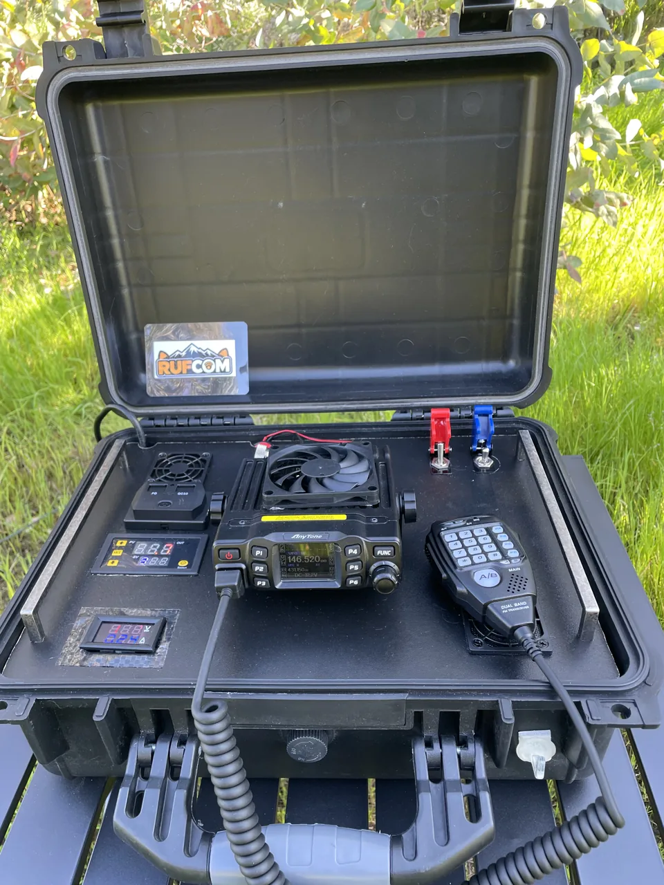

Obtener mi licencia
Requisitos y pasos para empezar como Aspirante.
Ver cómo empezar →Radioafición · proyectos · aventura
Aprende a usar tu radio, construye tus proyectos y lleva la radioafición más allá de casa.
RUFCOM nace de probar, construir y compartir lo que aprendemos en el camino.
Hecha por RUFCOM · Base73 MK1
Este proyecto dio origen a RUFCOM: reunir radio, alimentación y respaldo en una estación que podemos llevar con nosotros.
Compartimos cómo la construimos y qué aprendimos al usarla, para que también puedas dar forma a tu propia idea.
Conoce la maleta por dentro →
DIRECTO A LO QUE BUSCAS
Elige una opción y llega al recurso que necesitas.
Requisitos y pasos para empezar como Aspirante.
Ver cómo empezar →Calendario SUBTEL y mes de inscripción.
Ver fechas de examen →Consulta los listados públicos de licencias.
Consultar indicativo →Encuentra frecuencias y datos para preparar tu radio.
Buscar repetidores →Registra tus contactos por radio con instrucciones y un ejemplo.
Descargar libro de guardia →Encuentra temas de radio, antenas y salidas.
Explorar guías →EL CAMINO SIGUE
Conoce los equipos probados por RUFCOM y para qué los usamos.
Ver radios y equipos →Un proyecto de antena VHF para aprender haciendo.
Ver la guía →Prepara tu radio para cerros, parques y salidas al aire libre.
Preparar mi próxima salida →